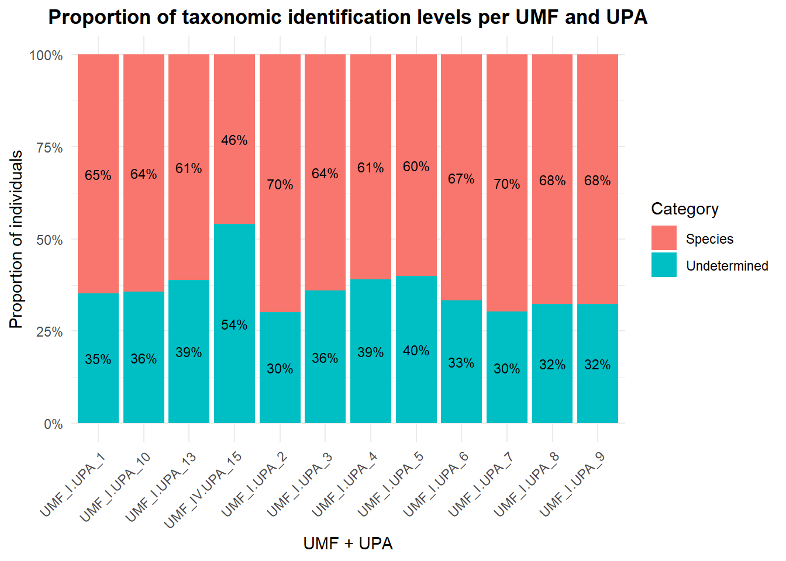
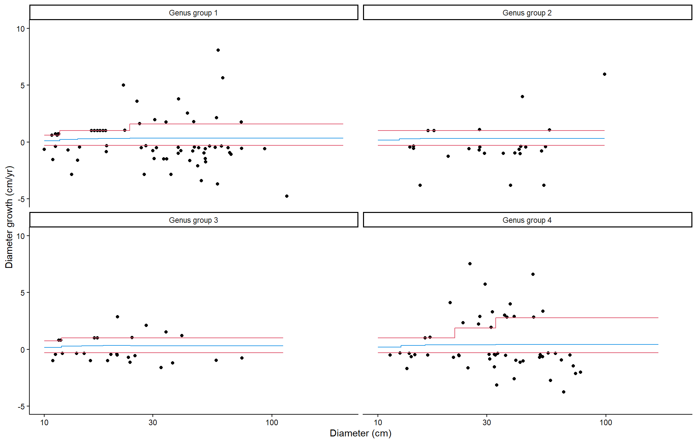
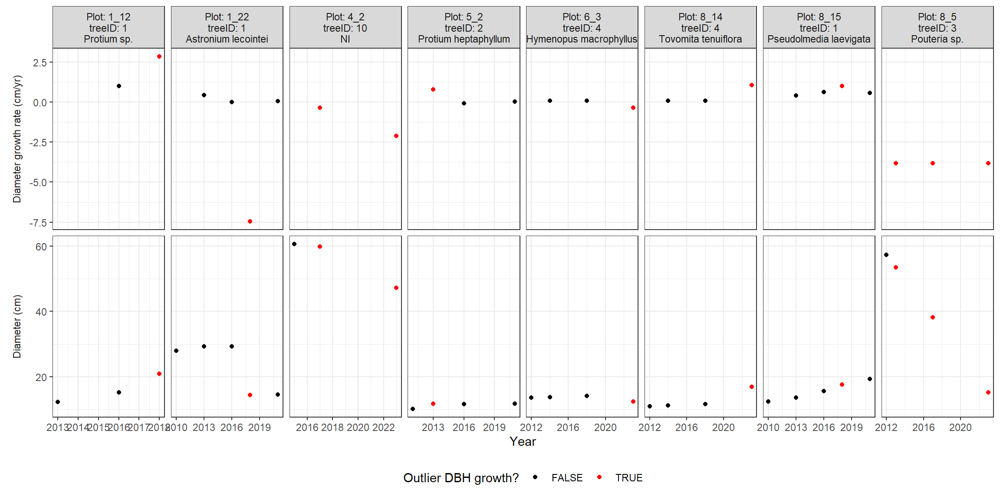
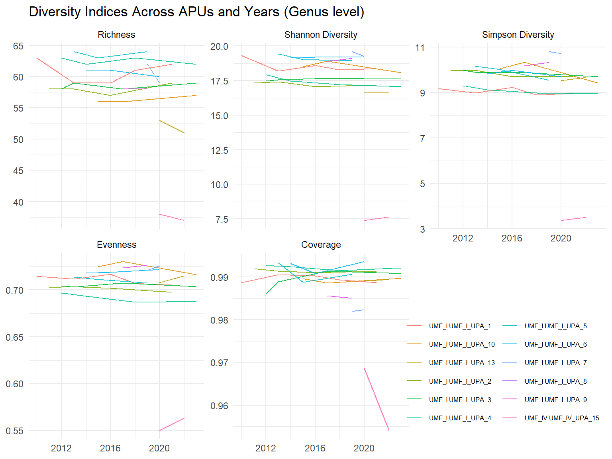

2 Harmonizing Permanent Plots data
2.1 Introduction
This script corrects and harmonizes data from the Permanent Plots (PPs). It adapts the methodology described in [https://github.com/Bioforest-project/inventories/blob/main/analyses/data_aggregation.qmd] of the BioForest project.
Data processed here were generated by Chapter 1 script.
2.2 Setup
2.3 Load data and visualize years of measurement
Code
| UMF | UPA | Number of measurements | Years |
|---|---|---|---|
| UMF_I | UPA_1 | 5 | 2010, 2013, 2016, 2018, 2021 |
| UMF_I | UPA_10 | 3 | 2015, 2017, 2023 |
| UMF_I | UPA_13 | 2 | 2020, 2022 |
| UMF_I | UPA_2 | 4 | 2011, 2013, 2016, 2021 |
| UMF_I | UPA_3 | 4 | 2012, 2013, 2017, 2023 |
| UMF_I | UPA_4 | 4 | 2012, 2014, 2018, 2023 |
| UMF_I | UPA_5 | 3 | 2013, 2015, 2019 |
| UMF_I | UPA_6 | 3 | 2014, 2016, 2020 |
| UMF_I | UPA_7 | 2 | 2019, 2020 |
| UMF_I | UPA_8 | 2 | 2017, 2019 |
| UMF_I | UPA_9 | 2 | 2017, 2019 |
| UMF_IV | UPA_15 | 2 | 2020, 2022 |
2.4 Taxonomic identification
We will visualize the proportion of complete species identification (genus + epithet), genus only and non identified species for each APU. We can see that around 35% of the trees on each APU are non identified.
Code
pps_cat <- pps %>%
mutate(
nome_completo = nome_florabr,
categoria = case_when(
str_detect(nome_completo, regex("Ni", ignore_case = TRUE)) ~ "Undetermined",
is.na(epiteto) | epiteto == "" | epiteto == "sp" ~ "Genus Only",
TRUE ~ "Species"
)
)
tab_cat <- pps_cat %>%
group_by(UMF, UPA, categoria) %>%
summarise(
n_individuos = n(),
.groups = "drop"
) %>%
group_by(UPA) %>%
mutate(
porc = 100 * n_individuos / sum(n_individuos, na.rm = TRUE)
) %>%
ungroup()
ggplot(tab_cat,
aes(x = interaction(UMF, UPA),
y = n_individuos,
fill = categoria)) +
geom_col(position = "fill") +
geom_text(
aes(label = paste0(round(porc), "%")),
position = position_fill(vjust = 0.5),
size = 3,
color = "black"
) +
scale_y_continuous(
labels = scales::percent_format(accuracy = 1)
) +
theme_minimal() +
labs(
x = "UMF + UPA",
y = "Proportion of individuals",
title = "Proportion of taxonomic identification levels per UMF and UPA",
fill = "Category"
) +
theme(
axis.text.x = element_text(angle = 45, hjust = 1),
plot.title = element_text(hjust = 0.5, face = "bold")
)
In average, 36% of the trees on each APU are non identified.
2.5 Check data consistency
2.5.1 Consistency of diameter measurements
2.5.2 Missing (NA) and zeros DBH values
We have no zeros or NA values in our DBH records.
Code
pps %>%
group_by(UMF,UPA) %>%
summarise(
`Zeros in diametrocm` = sum(diametrocm == 0,
na.rm = TRUE),
`NA in diametrocm` = sum(is.na(diametrocm)),
`Total records` = n(),
.groups = "drop"
) %>%
kbl(
caption = "Number of zero and NA values in diameter (cm) by UMF and UPA"
) %>%
kable_classic(full_width = FALSE)| UMF | UPA | Zeros in diametrocm | NA in diametrocm | Total records |
|---|---|---|---|---|
| UMF_I | UPA_1 | 0 | 0 | 5708 |
| UMF_I | UPA_10 | 0 | 0 | 2894 |
| UMF_I | UPA_13 | 0 | 0 | 2194 |
| UMF_I | UPA_2 | 0 | 0 | 5400 |
| UMF_I | UPA_3 | 0 | 0 | 5327 |
| UMF_I | UPA_4 | 0 | 0 | 5738 |
| UMF_I | UPA_5 | 0 | 0 | 3680 |
| UMF_I | UPA_6 | 0 | 0 | 3680 |
| UMF_I | UPA_7 | 0 | 0 | 1884 |
| UMF_I | UPA_8 | 0 | 0 | 1845 |
| UMF_I | UPA_9 | 0 | 0 | 1845 |
| UMF_IV | UPA_15 | 0 | 0 | 895 |
2.5.3 Check DBH cutoff
We have no diameter records below 10 cm.
Code
| UMF | UPA | DBH below 10 cm | Total records |
|---|---|---|---|
| UMF_I | UPA_1 | 0 | 5708 |
| UMF_I | UPA_10 | 0 | 2894 |
| UMF_I | UPA_13 | 0 | 2194 |
| UMF_I | UPA_2 | 0 | 5400 |
| UMF_I | UPA_3 | 0 | 5327 |
| UMF_I | UPA_4 | 0 | 5738 |
| UMF_I | UPA_5 | 0 | 3680 |
| UMF_I | UPA_6 | 0 | 3680 |
| UMF_I | UPA_7 | 0 | 1884 |
| UMF_I | UPA_8 | 0 | 1845 |
| UMF_I | UPA_9 | 0 | 1845 |
| UMF_IV | UPA_15 | 0 | 895 |
2.5.4 Avoid duplicated measurements
Threre are no duplicated records in this dataset.
Code
| X | p23_cdarea | p23_cdmedicao | p23_cdparcela | p23_cdsubparcela | p23_nrindividuo | p23_cdespecie | genero | epiteto | p23_cdcif | diametromm | p23_lgmudancapdm | p23_cdtratamento | p23_cdiluminacao | UPA | UMF | diametrocm | nome_pop | cod_upa | exploit_year | apu_area_ha | authorized_area_ha | cutting_intens_m3_ha | authorized_vol_m3 | nome_corrigido | nome_florabr | n_ids | ids |
|---|---|---|---|---|---|---|---|---|---|---|---|---|---|---|---|---|---|---|---|---|---|---|---|---|---|---|---|
2.6 Keep only live trees
2.6.1 Remove dead trees
We will remove all records with column cd23_cif == 5, 6, 7, 8, 9 or 10.
Code
| UMF | UPA | Removed records |
|---|---|---|
| UMF_I | UPA_1 | 286 |
| UMF_I | UPA_10 | 183 |
| UMF_I | UPA_13 | 58 |
| UMF_I | UPA_2 | 272 |
| UMF_I | UPA_3 | 281 |
| UMF_I | UPA_4 | 241 |
| UMF_I | UPA_5 | 239 |
| UMF_I | UPA_6 | 162 |
| UMF_I | UPA_7 | 94 |
| UMF_I | UPA_8 | 69 |
| UMF_I | UPA_9 | 69 |
| UMF_IV | UPA_15 | 79 |
2.7 Interpolation of missing measurements
If trees are missed in a census and remeasured in a later census, we use the DBH values from the previous and next census to interpolate the missing DBH value(s). This can lead to bias in the first and last censuses where missing DBH cannot be detected. We need to check that recruitment and mortality rates are not systematically lower in these two censuses.
Code
# Convert to BioForest data pattern to run the code
data_cor <- pps_live
names(data_cor) <- c("X",
"p23_cdarea",
"Year",
"Plot",
"Subplot",
"p23_nrindividuo",
"p23_cdespecie",
"Genus",
"Species",
"p23_cdcif",
"diametromm",
"p23_lgmudancapdm",
"p23_cdtratamento",
"p23_cdiluminacao",
"UPA",
"UMF",
"diameter_cor",
"nome_pop",
"Site",
"exploit_year",
"apu_area_ha",
"authorized_area_ha",
"cutting_intens_m3_ha",
"authorized_vol_m3",
"IdStem",
"nome_corrigido",
"ScientificName")
interpolate <- function(diam, years) {
if (sum(!is.na(diam)) > 1) {
return(approx(years, diam, years)$y)
} else {
return(diam)
}
}
# columns with tree-level information in data_cor
col_tree <-
!grepl(
"census|year|month|day|date|status|code|diam|hom|pom|circ|dbh",
tolower(colnames(data_cor))
)
col_pattern <- "Census|Year|Month|Day|Date|Status|Code|Diam|HOM|POM|Circ|DBH"
tree_info <- data_cor |>
select(c("Year", colnames(data_cor)[col_tree])) |>
group_by(Site, Plot, IdStem) |>
filter(Year == max(Year)) |>
select(-Year)
missing_censuses <- data_cor |>
# list all census years by plot and subplot
group_by(Site, Plot, Subplot) |>
reframe(Year = unique(Year)) |>
ungroup() |>
# add all combinations of IdStem x IdCensus (by Plot and Subplot)
right_join(
unique(data_cor[, c("Site", "Plot", "Subplot", "IdStem")]),
by = c("Site", "Plot", "Subplot")
) |>
# add tree-level information
merge(tree_info) |>
# add DBH information
merge(
data_cor[, c("IdStem", "Year", "diameter_cor")],
by = c("IdStem", "Year"),
all = TRUE
) |>
# interpolate missing diameters
group_by(IdStem) |>
mutate(
diameter_cor = interpolate(diameter_cor, Year)
) |>
subset(!is.na(diameter_cor)) |>
# keep only measurements missing from original data:
subset(!paste(IdStem, Year) %in%
with(data_cor, paste(IdStem, Year))) |> # nolint
mutate(Year = Year)
# add interpolated DBHs to raw data
data_cor <- bind_rows(
data_cor,
missing_censuses
)
rm(missing_censuses)
if (sum(is.na(data_cor$Diameter)) > 0) {
n_missing <- sum(is.na(data_cor$Diameter))
stem_missing <- length(unique(data_cor$IdStem[is.na(data_cor$Diameter)]))
text <- paste(
"We found a total of", sum(is.na(data_cor$Diameter)),
"missing DBH values, in", stem_missing, "stems.",
"The figure below shows a subset of", min(stem_missing, 12),
"trees with missing DBH (red points are interpolated DBH)."
)
} else {
text <- "No missing DBH values were interpolated."
}
if (sum(is.na(data_cor$Diameter)) > 0 && isTRUE(params$print)) {
illustration <- sample(
subset(data_cor, is.na(Diameter))$IdStem,
min(stem_missing, 12)
)
subset(data_cor, IdStem %in% illustration) |>
separate(IdTree, c(NA, NA, NA, "IdTree"), sep = "_") |>
mutate(label = paste0(
"Plot: ", Plot, "_", Subplot,
", treeID: ", IdTree, "\n Species: ", ScientificName
)) |>
ggplot(aes(x = Year, y = diameter_cor)) +
geom_point(aes(col = is.na(diameter_cor))) +
labs(x = "Census year", y = "Diameter (cm)", col = "Interpolated") +
scale_color_manual(values = c("black", "red")) +
facet_wrap(~label, scales = "free") +
theme_classic() +
theme(legend.position = "bottom")
}No missing DBH values were interpolated.
Below there is another way to verify it.
Code
pps %>%
group_by(UPA, p23_cdparcela, cod_indiv) %>%
summarise(
Years = paste(sort(unique(p23_cdmedicao)), collapse = ", "),
DBH_measured = any(!is.na(diametrocm)),
Missing_measurement = any(is.na(diametrocm)),
.groups = "drop"
) %>%
filter(DBH_measured & Missing_measurement) %>%
kbl(
caption = "Individuals with DBH measured in some years and missing in others, by UPA and plot."
) %>%
kable_classic(full_width = FALSE)| UPA | p23_cdparcela | cod_indiv | Years | DBH_measured | Missing_measurement |
|---|---|---|---|---|---|
2.8 Substitute excessive DBH changes (from Bioforest package)
Growth and productivity measurements are very sensitive to large changes in DBH, for example when the measurement height is changed. To mitigate this problem, we replace excessive DBH changes with the average growth value of similar trees (without changing the DBH values).
This poses two challenges: 1. what can be considered an ‘excessive’ DBH change and 2. how to define ‘similar’ trees.
Here we defined ‘similar’ trees by first grouping them by genus and size (DBH), assuming that these two factors are among the main drivers of tree growth. We ranked genera by median DBH growth and divided them into four groups of increasing median DBH growth, with similar numbers of individual measurements per group.
Code
genus_groups <- data_cor %>%
filter(!is.na(Genus)) %>%
# get median growth (excluding negative values) per genus
group_by(Genus) %>%
mutate(med_growth = median(diam_growth[diam_growth >= 0], na.rm = TRUE)) %>%
ungroup() %>%
# create quantile bins with equal number of individuals
mutate(gen_group = ntile(med_growth, 4)) %>%
group_by(Genus, med_growth) %>%
# summarize back to species level
summarise(gen_group = first(gen_group), .groups = "drop")Code
if (any(!is.na(genus_groups$med_growth))) {
genus_groups |>
subset(!is.na(gen_group) & !is.na(Genus)) |>
group_by(gen_group) |>
summarise(
range = paste(
paste(round(range(med_growth), 2), collapse = " - "),
"cm/yr"
),
genus = paste(Genus, collapse = ", ")
) |>
select(range, genus) |>
t() |>
knitr::kable(
col.names = paste(
"Group", seq_len(length(unique(drop_na(genus_groups)$gen_group)))
),
row.names = FALSE
)
}| Group 1 | Group 2 | Group 3 | Group 4 |
|---|---|---|---|
| 0 - 0.2 cm/yr | 0.2 - 0.2 cm/yr | 0.2 - 0.2 cm/yr | 0.23 - 0.77 cm/yr |
| Andira, Aspidosperma, Astronium, Bagassa, Bertholletia, Buchenavia, Castilla, Cedrelinga, Chrysophyllum, Clarisia, Couma, Dinizia, Eschweilera, Guarea, Handroanthus, Huberodendron, Lacistema, Laetia, Licania, Martiodendron, NI, Naucleopsis, Ni, Oxandra, Rinorea, Robrichia, Roupala, Schizolobium, Sterculia, Vitex | Erisma, Minquartia, Pouteria, Pseudolmedia, Virola | Ocotea, Protium | Aldina, Allantoma, Anacardium, Aniba, Bowdichia, Brosimum, Cariniana, Caryocar, Cecropia, Cedrela, Ceiba, Coccoloba, Copaifera, Couratari, Diplotropis, Dipteryx, Duckesia, Endopleura, Enterolobium, Goupia, Hevea, Hymenaea, Hymenolobium, Hymenopus, Jacaranda, Lecythis, Manilkara, Mezilaurus, Osteophloeum, Parkia, Peltogyne, Qualea, Ruizterania, Sextonia, Simarouba, Tachigali, Terminalia, Thyrsodium, Tovomita, Vatairea, Vochysia, Zygia |
We then split each genus group into 5 quantiles of DBH: this results in 20 groups of DBH growth measures based on both genus-level growth rates and size (DBH).
Outliers are defined here as the 0.5% lowest DBH growth values (all groups combined) and the 0.5% highest DBH growth values per group. These outliers in DBH growth were replaced by the mean growth of their group.
Code
data_cor <- data_cor |>
left_join(genus_groups,
by = "Genus") |>
group_by(gen_group) |>
mutate(diam_group = paste(gen_group, ntile(diameter_cor, 5), sep = "_")) |>
# lower diameter growth threshold is the same for all species and sizes
ungroup() |>
mutate(
dgrowth_lower = quantile(diam_growth, 0.005, na.rm = TRUE),
# define general upper quantile for unidentified individuals
dgrowth_upper = quantile(diam_growth, 0.995, na.rm = TRUE)
) |>
# upper diameter growth threshold defined by species and size
group_by(diam_group) |>
mutate(dgrowth_upper = ifelse(!is.na(gen_group),
quantile(diam_growth, 0.995, na.rm = TRUE),
dgrowth_upper
)) |>
# define outlier values
mutate(outlier = !is.na(diam_growth) &
(diam_growth < dgrowth_lower | diam_growth > dgrowth_upper)) |> # nolint
# estimate average growth by group
mutate(average_growth = mean(diam_growth[!outlier], na.rm = TRUE)) |>
ungroup() |>
# substitute diameter growth
mutate(diam_growth_cor = ifelse(outlier, average_growth, diam_growth))Code
if (sum(data_cor$outlier) > 0) {
text <- paste(
"This graph shows all outlier DBH growth values (in cm/yr),",
"as well as the lower and upper bounds of 'acceptable' DBH",
"growth (in red) and the average DBH growth with which outlier",
"values are replaced (blue), as a function of tree DBH and",
"genus groups."
)
} else {
text <- paste(
"There were no diameter growth values to correct, as no stem",
"was measured more than once."
)
}This graph shows all outlier DBH growth values (in cm/yr), as well as the lower and upper bounds of ‘acceptable’ DBH growth (in red) and the average DBH growth with which outlier values are replaced (blue), as a function of tree DBH and genus groups.
Code
if (sum(data_cor$outlier) > 0 && isTRUE(params$print)) {
data_thresh <- data_cor |>
subset(!is.na(gen_group)) |>
group_by(gen_group, diam_group) |>
summarise(
diam_min = min(diameter_cor),
diam_max = max(diameter_cor),
dgrowth_upper = unique(dgrowth_upper),
dgrowth_lower = unique(dgrowth_lower),
average_growth = unique(average_growth)
) |>
pivot_longer(cols = c("diam_max", "diam_min"))
data_cor |>
subset(outlier) |>
ggplot(aes(x = diameter_cor, y = diam_growth)) +
geom_point() +
geom_line(data = data_thresh, aes(x = value, y = dgrowth_upper), col = 2) +
geom_line(data = data_thresh, aes(x = value, y = dgrowth_lower), col = 2) +
geom_line(data = data_thresh, aes(x = value, y = average_growth), col = 4) +
labs(x = "Diameter (cm)", y = "Diameter growth (cm/yr)") +
ylim(-5, 10) +
facet_wrap(~ paste("Genus group", gen_group)) +
scale_x_log10() +
theme_classic()
}
Code
if (sum(data_cor$outlier) > 0) {
text <- paste(
"The graph below shows a subset of trees with outlier DBH",
"growth values; the top panels show the DBH growth values and",
"the bottom panels show the corresponding DBH values (one",
"column per tree). The red dots are the outlier DBH growth",
"values, which were then replaced by the average growth values",
"for their group (species x DBH). DBH values were not replaced."
)
} else {
text <- ""
}The graph below shows a subset of trees with outlier DBH growth values; the top panels show the DBH growth values and the bottom panels show the corresponding DBH values (one column per tree). The red dots are the outlier DBH growth values, which were then replaced by the average growth values for their group (species x DBH). DBH values were not replaced.
Code
if (sum(data_cor$outlier) > 0 && isTRUE(params$print)) {
id_cor <-
data_cor |>
subset(outlier) |>
group_by(gen_group) |>
summarise(id = sample(unique(IdStem), min(2, length(unique(IdStem)))))
labs_diam <- c(
diam_growth = "Diameter growth rate (cm/yr)",
diameter_cor = "Diameter (cm)"
)
data_cor |>
subset(IdStem %in% id_cor$id) |>
separate(IdStem, c(NA, NA, NA, "IdStem"), sep = "_") |>
mutate(label = paste0(
"Plot: ", Plot, "_", Subplot,
"\ntreeID: ", IdStem, "\n", ScientificName
)) |>
pivot_longer(cols = c("diam_growth", "diameter_cor")) |>
ggplot(aes(x = Year)) +
geom_point(aes(y = value, col = outlier)) +
labs(col = "Outlier DBH growth?", y = NULL) +
scale_color_manual(values = c("black", "red")) +
facet_grid(name ~ label,
scales = "free", switch = "y",
labeller = labeller(name = labs_diam)
) +
theme_bw() +
theme(
legend.position = "bottom", strip.placement = "outside",
strip.background.y = element_blank()
)
}
2.9 Data aggregation
To visualize some variables of interest.
2.9.1 Taxonomic Diversity
To evaluate taxonomic diversity, we used functions from the entropart package in R (Marcon et al., 2020). We estimated all these indices at both species and genus level.
We quantified taxonomic diversity using Hill numbers, a family of diversity measures that account for both species richness and evenness.
2.9.1.1 Species Richness
Diversity of Order q = 0: Species richness, which counts all species equally, regardless of their abundance.
2.9.1.2 Shannon Diversity
Diversity of Order q = 1: Shannon diversity, calculated as the exponential of Shannon entropy, which gives proportional weight to species based on their relative abundances. This index balances sensitivity to both common and rare species.
2.9.1.3 Simpson Diversity
Diversity of Order q = 2: Simpson diversity, calculated as the inverse of the Simpson index, which emphasizes dominant species and is less sensitive to rare taxa.
2.9.1.4 Evenness
Evenness reflects how uniformly individuals are distributed among the observed species. It was derived by dividing the observed diversity (for a given value of q) by the theoretical maximum diversity for the same number of species. Values closer to 1 indicate communities where individuals are more evenly distributed across species, while lower values indicate dominance by a few species.
2.9.1.5 Coverage
Sample coverage estimates the proportion of individuals in a community that belong to species already detected in the sample. It provides an indication of sampling completeness, with values approaching 1 suggesting that most of the community has been captured and that further sampling is unlikely to yield many additional species.
The following figures represent all the above mentioned indices at the species and genus level. The y axis shows the different census years, while the x-axis shows the value of the indices. The different coloured lines represent the plots.
Code
# for each census year, add information on previous and next census years
data_year <- data_cor |>
ungroup() |>
select(Site, Plot, Year) |>
unique() |>
drop_na() |>
arrange(Site, Plot, Year) |>
group_by(Site, Plot) |>
mutate(
prev_census = c(NA, Year[-length(Year)]),
next_census = c(Year[-1], NA)
) |>
ungroup()
# add information on each tree's recruitment and mortality years
data_cor <- data_cor |>
left_join(data_year) |>
mutate(
recr_year = min(Year),
mort_year = max(Year), .by = IdStem
)Code
# Calculate neutral diversity indices per plot and year
# species
neutral_div_sp <- data_cor %>%
subset(!is.na(Species)) %>%
group_by(UMF, Site, Year = Year, ScientificName) %>%
summarise(count = n(), .groups = "drop") %>%
group_by(UMF, Site, Year) %>%
summarise(
diversity_q0_sp = Diversity(count,
q = 0, SampleCoverage = 0.8,
Correction = "None"
),
diversity_q1_sp = Diversity(count,
q = 1, SampleCoverage = 0.8,
Correction = "None"
),
diversity_q2_sp = Diversity(count,
q = 2, SampleCoverage = 0.8,
Correction = "None"
),
evenness_sp = Shannon(count, SampleCoverage = 0.8, Correction = "None") /
log(n_distinct(ScientificName)),
coverage_sp = Coverage(count)
) %>%
pivot_longer(
cols = contains("_sp"),
names_to = "variable",
values_to = "value"
)
# genera
neutral_div_gen <- data_cor %>%
subset(!is.na(Genus)) %>%
group_by(UMF, Site, Year = Year, genus = Genus) %>%
summarise(count = n(), .groups = "drop") %>%
group_by(UMF, Site, Year) %>%
summarise(
diversity_q0_gen = Diversity(count,
q = 0, SampleCoverage = 0.9,
Correction = "None"
),
diversity_q1_gen = Diversity(count,
q = 1, SampleCoverage = 0.9,
Correction = "None"
),
diversity_q2_gen = Diversity(count,
q = 2, SampleCoverage = 0.9,
Correction = "None"
),
evenness_gen = Shannon(count, SampleCoverage = 0.9, Correction = "None") /
log(n_distinct(genus)),
coverage_gen = Coverage(count)
) %>%
pivot_longer(
cols = contains("_gen"),
names_to = "variable",
values_to = "value"
)
# Add to main dataframe with aggregatd data
data_aggr <- data_aggr %>%
rbind(neutral_div_sp) %>%
rbind(neutral_div_gen)Code
aggr_fig <- function(data, vars_names, title_fig = NULL) {
g <- data %>%
subset(variable %in% names(var_names)) %>%
ggplot(aes(x = Year,
y = value,
color = paste(UMF,Site))) +
# geom_boxplot(aes(x = Year,
# y = value,
# group = Year),
# inherit.aes = FALSE,
# alpha = 0.2,
# width = 0.5
# ) +
geom_line(alpha = 0.8) +
facet_wrap(~ variable,
scales = "free_y",
labeller = labeller(variable = var_names)) +
labs(
title = title_fig,
x = NULL, y = NULL, color = NULL
) +
theme_minimal()
if (length(var_names) == 5) {
g + theme(legend.position = c(0.82, 0.17),
legend.text = element_text(size = 6),
legend.title = element_text(size = 7)) +
guides(color=guide_legend(ncol=2))
} else {
g
}
}Code
# Plot temporal trajectories of different indices across plots
if (isTRUE(params$print)) {
var_names <- c(
coverage = "Coverage",
diversity_q0 = "Richness",
diversity_q1 = "Shannon Diversity",
diversity_q2 = "Simpson Diversity",
evenness = "Evenness"
)
data_aggr %>%
subset(variable %in% neutral_div_sp$variable) %>%
mutate(variable = factor(gsub("_sp", "", variable),
levels = c(
paste0("diversity_q", 0:2),
"evenness", "coverage"
)
)) %>%
aggr_fig(var_names,
title_fig = paste(
"Diversity Indices Across Plots and Years",
"(Species level)"
)
)
data_aggr %>%
subset(variable %in% neutral_div_gen$variable) %>%
mutate(variable = factor(gsub("_gen", "", variable),
levels = c(
paste0("diversity_q", 0:2),
"evenness", "coverage"
)
)) %>%
aggr_fig(var_names,
title_fig = paste(
"Diversity Indices Across APUs and Years",
"(Genus level)"
)
)
}